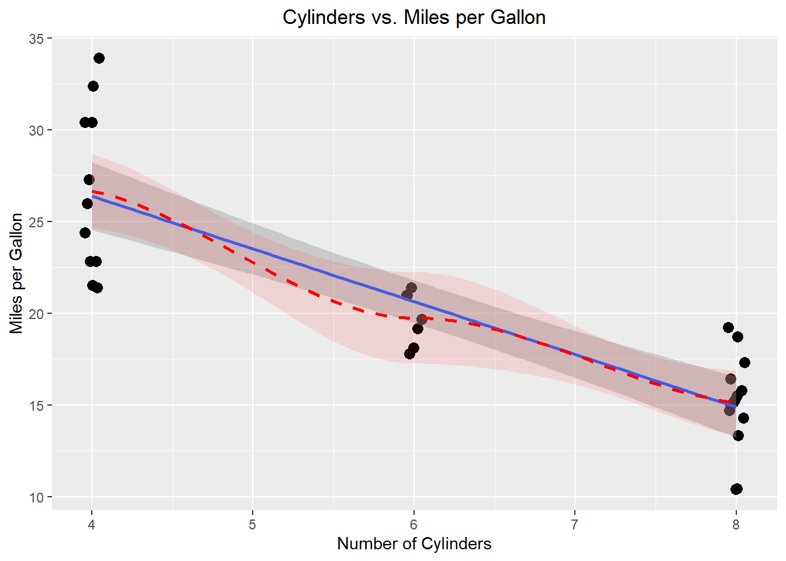
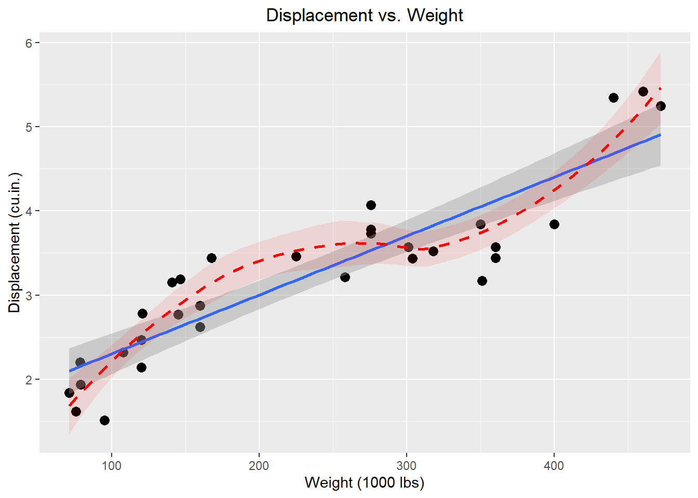

![]()
| mpg | cyl | disp | hp | drat | wt | qsec | vs | am | gear | carb | |
|---|---|---|---|---|---|---|---|---|---|---|---|
| Mazda RX4 | 21.0 | 6 | 160.0 | 110 | 3.90 | 2.620 | 16.46 | 0 | 1 | 4 | 4 |
| Mazda RX4 Wag | 21.0 | 6 | 160.0 | 110 | 3.90 | 2.875 | 17.02 | 0 | 1 | 4 | 4 |
| Datsun 710 | 22.8 | 4 | 108.0 | 93 | 3.85 | 2.320 | 18.61 | 1 | 1 | 4 | 1 |
| Hornet 4 Drive | 21.4 | 6 | 258.0 | 110 | 3.08 | 3.215 | 19.44 | 1 | 0 | 3 | 1 |
| Hornet Sportabout | 18.7 | 8 | 360.0 | 175 | 3.15 | 3.440 | 17.02 | 0 | 0 | 3 | 2 |
| Valiant | 18.1 | 6 | 225.0 | 105 | 2.76 | 3.460 | 20.22 | 1 | 0 | 3 | 1 |
| Duster 360 | 14.3 | 8 | 360.0 | 245 | 3.21 | 3.570 | 15.84 | 0 | 0 | 3 | 4 |
| Merc 240D | 24.4 | 4 | 146.7 | 62 | 3.69 | 3.190 | 20.00 | 1 | 0 | 4 | 2 |
| Merc 230 | 22.8 | 4 | 140.8 | 95 | 3.92 | 3.150 | 22.90 | 1 | 0 | 4 | 2 |
| Merc 280 | 19.2 | 6 | 167.6 | 123 | 3.92 | 3.440 | 18.30 | 1 | 0 | 4 | 4 |
| Merc 280C | 17.8 | 6 | 167.6 | 123 | 3.92 | 3.440 | 18.90 | 1 | 0 | 4 | 4 |
| Merc 450SE | 16.4 | 8 | 275.8 | 180 | 3.07 | 4.070 | 17.40 | 0 | 0 | 3 | 3 |
| Merc 450SL | 17.3 | 8 | 275.8 | 180 | 3.07 | 3.730 | 17.60 | 0 | 0 | 3 | 3 |
| Merc 450SLC | 15.2 | 8 | 275.8 | 180 | 3.07 | 3.780 | 18.00 | 0 | 0 | 3 | 3 |
| Cadillac Fleetwood | 10.4 | 8 | 472.0 | 205 | 2.93 | 5.250 | 17.98 | 0 | 0 | 3 | 4 |
| Lincoln Continental | 10.4 | 8 | 460.0 | 215 | 3.00 | 5.424 | 17.82 | 0 | 0 | 3 | 4 |
| Chrysler Imperial | 14.7 | 8 | 440.0 | 230 | 3.23 | 5.345 | 17.42 | 0 | 0 | 3 | 4 |
| Fiat 128 | 32.4 | 4 | 78.7 | 66 | 4.08 | 2.200 | 19.47 | 1 | 1 | 4 | 1 |
| Honda Civic | 30.4 | 4 | 75.7 | 52 | 4.93 | 1.615 | 18.52 | 1 | 1 | 4 | 2 |
| Toyota Corolla | 33.9 | 4 | 71.1 | 65 | 4.22 | 1.835 | 19.90 | 1 | 1 | 4 | 1 |
| Toyota Corona | 21.5 | 4 | 120.1 | 97 | 3.70 | 2.465 | 20.01 | 1 | 0 | 3 | 1 |
| Dodge Challenger | 15.5 | 8 | 318.0 | 150 | 2.76 | 3.520 | 16.87 | 0 | 0 | 3 | 2 |
| AMC Javelin | 15.2 | 8 | 304.0 | 150 | 3.15 | 3.435 | 17.30 | 0 | 0 | 3 | 2 |
| Camaro Z28 | 13.3 | 8 | 350.0 | 245 | 3.73 | 3.840 | 15.41 | 0 | 0 | 3 | 4 |
| Pontiac Firebird | 19.2 | 8 | 400.0 | 175 | 3.08 | 3.845 | 17.05 | 0 | 0 | 3 | 2 |
| Fiat X1-9 | 27.3 | 4 | 79.0 | 66 | 4.08 | 1.935 | 18.90 | 1 | 1 | 4 | 1 |
| Porsche 914-2 | 26.0 | 4 | 120.3 | 91 | 4.43 | 2.140 | 16.70 | 0 | 1 | 5 | 2 |
| Lotus Europa | 30.4 | 4 | 95.1 | 113 | 3.77 | 1.513 | 16.90 | 1 | 1 | 5 | 2 |
| Ford Pantera L | 15.8 | 8 | 351.0 | 264 | 4.22 | 3.170 | 14.50 | 0 | 1 | 5 | 4 |
| Ferrari Dino | 19.7 | 6 | 145.0 | 175 | 3.62 | 2.770 | 15.50 | 0 | 1 | 5 | 6 |
| Maserati Bora | 15.0 | 8 | 301.0 | 335 | 3.54 | 3.570 | 14.60 | 0 | 1 | 5 | 8 |
| Volvo 142E | 21.4 | 4 | 121.0 | 109 | 4.11 | 2.780 | 18.60 | 1 | 1 | 4 | 2 |
Git Demonstration
Abstract
Three Rings for the Elven-kings under the sky, Seven for the Dwarf-lords in their halls of stone, Nine for Mortal Men doomed to die, One for the Dark Lord on his dark throne In the Land of Mordor where the Shadows lie. One Ring to rule them all, One Ring to find them, One Ring to bring them all and in the darkness bind them In the Land of Mordor where the Shadows lie.
Keywords
git, github, Quarto
Introduction
There is another astonishing thing about Hobbits of old that must be mentioned, an astonishing habit: they imbibed or inhaled, through pipes of clay or wood, the smoke of the burning leaves of a herb, which they called pipe-weed or leaf, a variety probably of Nicotiana. A great deal of mystery surrounds the origin of this peculiar custom, or ‘art’ as the Hobbits preferred to call it. All that could be discovered about it in antiquity was put together by Meriadoc Brandybuck (later Master of Buckland), and since he and the tobacco of the Southfarthing play a part in the history that follows, his remarks in the introduction to his Herblore of the Shire may be quoted.
‘This,’ he says, ’is the one art that we can certainly claim to be our own invention. When Hobbits first began to smoke is not known, all the legends and family histories take it for granted; for ages folk in the Shire smoked various herbs, some fouler, some sweeter. But all accounts agree that Tobold Hornblower of Longbottom in the Southfarthing first grew the true pipe-weed in his gardens in the days of Isengrim the Second, about the year 1070 of Shire -reckoning. The best home-grown still comes from that district, especially the varieties now known as Longbottom Leaf, Old Toby, and Southern Star.
’How Old Toby came by the plant is not recorded, for to his dying day he would not tell. He knew much about herbs, but he was no traveller. It is said that in his youth he went often to Bree, though he certainly never went further from the Shire than that. It is thus quite possible that he learned of this plant in Bree, where now, at any rate, it grows well on the south slopes of the hill. The Bree-hobbits claim to have been the first actual smokers of the pipe-weed. They claim, of course, to have done everything before the people of the Shire, whom they refer to as “colonists”; but in this case their claim is, I think, likely to be true. And certainly it was from Bree that the art of smoking the genuine weed spread in the recent centuries among Dwarves and such other folk, Rangers, Wizards, or wanderers, as still passed to and fro through that ancient road-meeting. The home and centre of the art is thus to be found in the old inn of Bree, The Prancing Pony, that has been kept by the family of Butterbur from time beyond record.
‘All the same, observations that I have made on my own many journeys south have convinced me that the weed itself is not native to our parts of the world, but came northward from the lower Anduin, whither it was, I suspect, originally brought over Sea by the Men of Westernesse. It grows abund¬ antly in Gondor, and there is richer and larger than in the North, where it is never found wild, and flourishes only in warm sheltered places like Longbottom. The Men of Gondor call it sweet galenas, and esteem it only for the fragrance of its flowers. From that land it must have been carried up the Greenway during the long centuries between the coming of Elendil and our own days. But even the Dunedain of Gondor allow us this credit: Hobbits first put it into pipes. Not even the Wizards first thought of that before we did. Though one Wizard that I knew took up the art long ago, and became as skilful in it as in all other things that he put his mind to.’
Materials & Methods
RT-QuIC
RT-QuIC was performed like it should be according to Schwabenlander et al. (2021).
Statistical Analysis
We did the stats like we always have.
We used MPR, described in Rowden et al. (2023).
Results
| Sample | MPR | RAF | p-value | Result |
|---|---|---|---|---|
| 1 | 12 | .4 | .001 | Detected |
| 2 | 2 | .005 | .12 | Suspect |
| 3 | 1.8 | 0 | .999 | Not Detected |


Discussion
We’re not really sure what is going on here.
References
Rowden, Gage R., Catalina Picasso-Risso, Manci Li, Marc D. Schwabenlander, Tiffany M. Wolf, and Peter A. Larsen. 2023. “Standardization of Data Analysis for RT-QuIC-Based Detection of Chronic Wasting Disease.” Pathogens 12 (2). https://doi.org/10.3390/pathogens12020309.
Schwabenlander, Marc D, Gage R Rowden, Manci Li, Kelsie LaSharr, Erik C Hildebrand, Suzanne Stone, Davis M Seelig, et al. 2021. “Comparison of Chronic Wasting Disease Detection Methods and Procedures: Implications for Free-Ranging White-Tailed Deer (Odocoileus virginianus) Surveillance and Management.” Journal of Wildlife Diseases, October. https://doi.org/10.7589/JWD-D-21-00033.